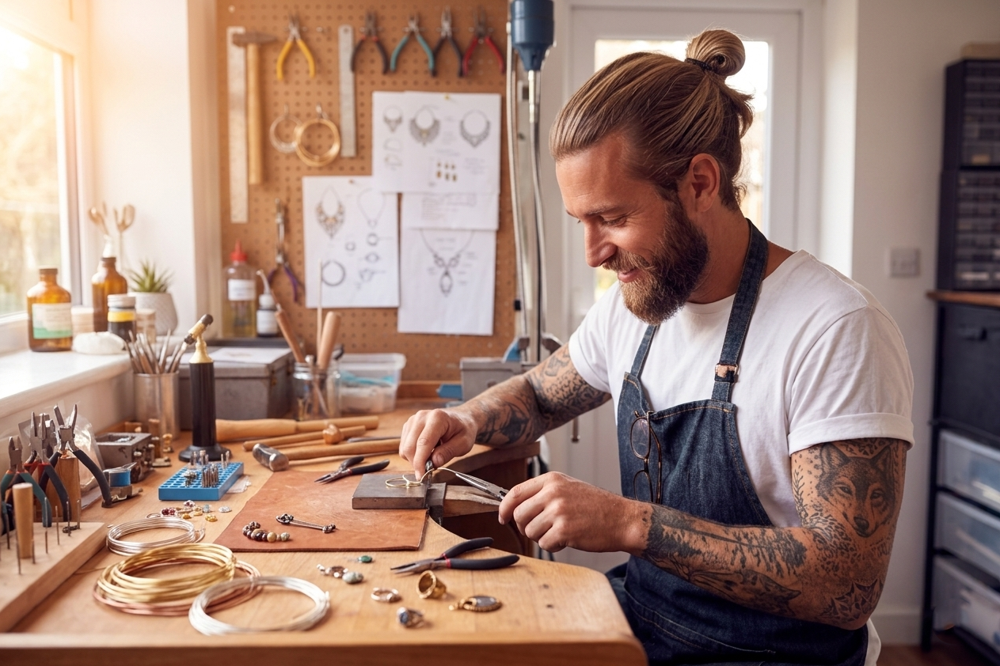
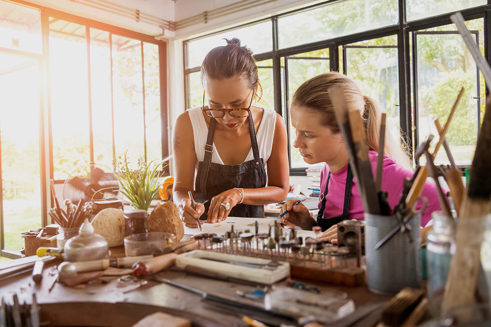
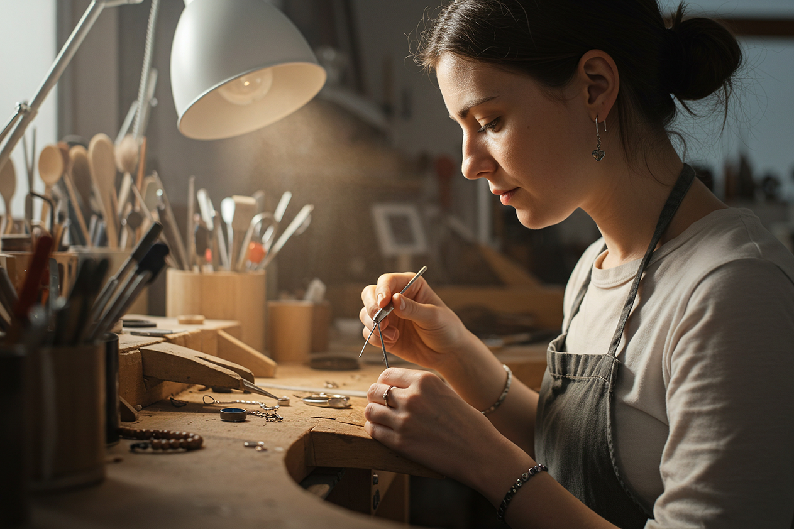

Taller de bisutería emocional con piedras
Creación de piezas con piedras naturales vinculadas a emociones y energía personal. Incluye materiales y cada asistente se lleva su pieza.
Charlas y talleres de la I Jornada de artesanía de joyas y bisutería
Creación de piezas con piedras naturales vinculadas a emociones y energía personal. Incluye materiales y cada asistente se lleva su pieza.

Introducción a técnicas clásicas en oro: moldes, fundición y acabados. Valor del proceso artesanal en la joyería tradicional.
Uso de conchas, piedras y fibras orgánicas en diseño responsable. Enfoque en sostenibilidad y producción consciente.

Análisis de tendencias actuales y métodos creativos. Del concepto inicial al desarrollo de una pieza moderna.

Técnicas libres con textiles, resinas o reciclados. Incluye materiales y pieza final para cada participante.

Creación de piezas versátiles que se pueden transformar o combinar. Sistemas modulares para diferentes usos y estilos.